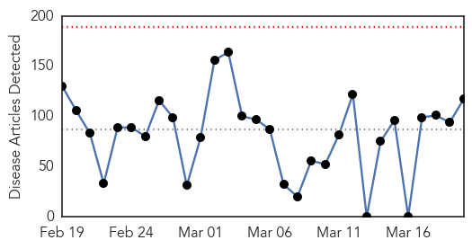
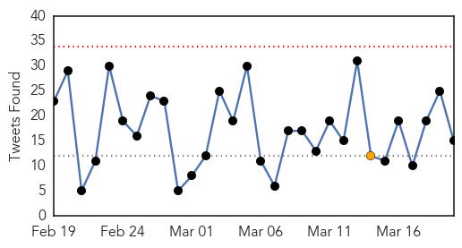
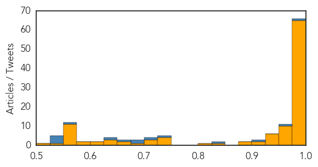
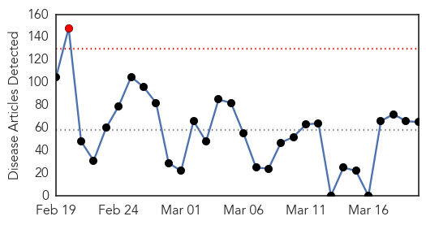
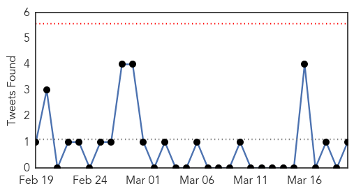
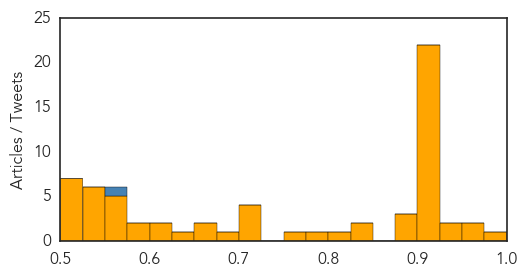

Ebola
30-Day Web Trend
0 alerts, 0 warnings

30-Day Twitter Trend
0 alerts, 1 warnings

Article Locations


Article Confidences
Top Articles:
- 1.000
- Emails: UN health agency resisted declaring Ebola emergency
- 1.000
- Emails: UN health agency resisted declaring Ebola emergency
- 1.000
- Emails: UN health agency resisted declaring Ebola emergency
- 1.000
- Liberia Reports First Ebola Case in Weeks
- 1.000
- Emails reveal WHO intentionally delayed declaring Ebola emergency
- 1.000
- ‘WHO resisted declaring Ebola emergency’
- 1.000
- Emails: UN health agency resisted declaring Ebola emergency
- 1.000
- Liberia reports first new case of Ebola in weeks
- 1.000
- Spike in Ebola in Guinea could reflect access to hidden patients
- 1.000
- Emails: UN health agency resisted declaring Ebola emergency
- 1.000
- Ebola-hit Sierra Leone to lock down 2.5 million people
- 1.000
- Spike in Ebola in Guinea could reflect access to hidden patients
- 1.000
- Sierra Leone to lock down Ebola hotspots next week - officials
- 1.000
- Ebola case undermines Liberia disease-free hopes
- 1.000
- WHO resisted declaring Ebola emergency on economic, political grounds
- 1.000
- Liberia reports first new case of Ebola in weeks
- 1.000
- Ebola-hit Sierra Leone to lock down 2.5 million people
- 1.000
- Emails: UN health agency resisted declaring Ebola emergency
- 0.999
- Lockdown of 2.5 million people in Ebola-hit Sierra Leone
- 0.999
- Liberia Reports First Ebola Case in Weeks
- 0.999
- Ebola-hit Sierra Leone to lock down 2.5 million people
- 0.999
- Sierra Leone imposes new curfew to contain Ebola
- 0.999
- Tracking Ebola: the killer hiding in the jungle
- 0.999
- AP: UN Stalled Declaration of Ebola Emergency for Fear of Interfering with Mecca Pilgrimage
- 0.999
- Sierra Leone imposes new curfew to contain Ebola
- 0.999
- WHO Warns of Measles in Ebola Countries
- 0.998
- Guinea reports highest weekly Ebola case total so far this year, new UN data shows
- 0.998
- Ebola: Sierra Leone announces 3-day lockdown of 2.5 million people
- 0.998
- Emails: WHO resisted declaring Ebola emergency
- 0.997
- Helen Scott: How Canada can help beat Ebola
- 0.997
- Ebola: Sierra Leone to enforce 3-day lockdown
- 0.997
- Emails show UN health agency resisted declaring Ebola emergency on economic, political grounds
- 0.996
- Violence against women rises in Ebola-hit nations: ministers: TRFN
- 0.996
- Sierra Leone’s ex-VP to challenge removal
- 0.996
- Beyond the outbreak: leading expert on what the Ebola crisis can teach us
- 0.996
- Liberia: MICAT Clarifies U.S. Role in Allison's Case
- 0.995
- World Health Organisation 'intentionally delayed declaring Ebola emergency'
- 0.995
- U.N. delayed Ebola alarm
- 0.995
- Revealed: Three people tested for deadly Ebola virus in Greater Manchester since start of global outbreak
- 0.995
- Emails: UN health agency resisted declaring Ebola emergency
- 0.994
- Emails: UN health agency resisted declaring Ebola emergency
- 0.994
- Emails show leaders delayed Ebola S.O.S.
- 0.994
- Hunting for the next Ebola outbreak in the deep African jungle
- 0.994
- Emails: UN health agency resisted declaring Ebola emergency
- 0.994
- Liberia pays benefits to families of deceased Ebola health workers
- 0.994
- World Health Organization Delayed Declaring Ebola An Emergency For 2 Months
- 0.994
- Fiji Times Online
- 0.993
- Ebola outbreak: UN health agency waited several weeks before declaring emergency
- 0.993
- Fort Smith/Fayetteville News
- 0.992
- Guinea only reported confirmed Ebola cases and deaths
Showing top 50 articles...
Top Tweets:
- 0.989
- Ebola outbreak has reduced vaccination coverage in Guinea Liberia Sierra Leone as health facilities staff focus on halting the outbreak
- 0.967
- During the Ebola outbreak ppl infected w/ malaria hv been unable to get treatment due to fear to seek help at health centres
- 0.912
- Ebola Update: 24743 confirmed probable and suspected cases reported in 3 most affected countries with 10216 deaths. EbolaResponse
- 0.835
- Liberia official: New patient tests positive for Ebola - USA TODAY http://t.co/Q4U6oljkSh ebola EVD
- 0.744
- RT: BREAKING: A new case of ebola has been confirmed in Liberia just weeks before it was due to be declared free of the disease.
- 0.701
- Sierra Leoneans halt genital mutilation amid Ebola fears: UK minister - Reuters http://t.co/6SM83mxZMV ebola EVD
- 0.679
- Liberia Reports First Ebola Case in Weeks - New York Times http://t.co/pODXygWzz0 ebola EVD
- 0.677
- Emails: UN Health Agency Resisted Declaring Ebola Emergency - ABC News http://t.co/0WLTnX24gz ebola EVD
- 0.653
- Deep in the jungle hunting for the next Ebola outbreak - Washington Post http://t.co/4DbCksh2WD ebola EVD
- 0.639
- Families of Liberian health workers killed by Ebola get $5G - Fox News http://t.co/N5qG4UaQUB ebola EVD
- 0.568
- How to Prevent the Next Ebola - The Atlantic http://t.co/SFMfvIsONh ebola EVD
- 0.550
- RT: Le PNUD appuie l'esprit de citoyenneté et le leadership associatif des jeunes volontaires de Mamou contre Ebola. http://t.c…
- 0.547
- RT: Sierra Leone will next week confine about two-and-a-half-million people to their homes for three days due to Ebola. http://t…
- 0.532
- Emails reveal WHO delayed declaring Ebola emergency due to political ... - Fox News http://t.co/aJ80jwwycF ebola EVD
- 0.526
- Ebola outbreak: UN health agency waited several weeks before declaring emergency http://t.co/Qyh9VUInrW
Unknown
30-Day Web Trend
1 alerts, 0 warnings

30-Day Twitter Trend
0 alerts, 0 warnings

Article Locations


Article Confidences
Top Articles:
- 0.995
- Uganda to mark World Water Day amid typhoid outbreak
- 0.952
- No TB outbreak in Shawnee County, but awareness advised
- 0.950
- Blinding Syphilis: West Coast Cases Rise
- 0.948
- Brazos County Health Department Seeing New Surge in Flu Cases
- 0.934
- NWSC says its water is clean as suspected typhoid cases rise to 5,000
- 0.917
- Chicago Tribune
- 0.917
- Chicago Tribune
- 0.917
- Chicago Tribune
- 0.917
- Chicago Tribune
- 0.917
- Chicago Tribune
- 0.917
- Chicago Tribune
- 0.917
- Chicago Tribune
- 0.917
- Chicago Tribune
- 0.917
- Chicago Tribune
- 0.917
- Chicago Tribune
- 0.917
- Chicago Tribune
- 0.917
- Chicago Tribune
- 0.917
- Chicago Tribune
- 0.917
- Chicago Tribune
- 0.917
- Chicago Tribune
- 0.917
- Chicago Tribune
- 0.917
- Chicago Tribune
- 0.917
- Chicago Tribune
- 0.917
- Chicago Tribune
- 0.917
- Chicago Tribune
- 0.917
- Chicago Tribune
- 0.917
- Chicago Tribune
- 0.895
- HIV outbreak spreading fast across southern Indiana
- 0.889
- Spike in Indiana HIV cases calls for quick action, officials say
- 0.877
- African Swine Fever Restricts Pig Movements in Zambia
- 0.848
- Decline in U.S. Tuberculosis Rates Slows
- 0.837
- New blood test could help prevent antibiotic misuse
- 0.814
- Vietnam province reports virulent bird flu outbreak , news, Health News, AsiaOne YourHealth
- 0.788
- Kansas sees 27 people test positive for tuberculosis infection
- 0.774
- Chemist flu jabs in demand
- 0.721
- Admn bid to prevent encephalitis outbreak in Muzaffarpur district
- 0.718
- Our View: Response to Portland school outbreak points out CDC's value
- 0.709
- Nigerian Scientists Discover Two New Viruses
- 0.702
- 28 people test positive for tuberculosis at Kansas school
- 0.694
- Vanuatu searches for potable water as death toll rises to 13
- 0.665
- World TB Day: Sindh registered 576,162 patients since 2000
- 0.662
- HIV outbreak prompts request for help from CDC
- 0.626
- Bat with rabies found in county
- 0.621
- Vanuatu children at risk of deadly water-borne diseases
- 0.621
- China Airlines stewardess possibly spreads rubella to over 1,000 passengers
- 0.596
- Faculty, Staff Invited to “Pathways to Careers in Public Health” on March 26
- 0.579
- African parasite that spreads poverty by killing cattle tamed by its less lethal cousins
- 0.567
- Small hospitals big step
- 0.562
- Cyclone Pam cripples sexual and reproductive health services in Vanuatu - Vanuatu
- 0.559
- New meningococcal case at the University of Oregon
Showing top 50 articles...
Top Tweets:
- 0.557
- Is it the flu or is it a cold? Symptoms such as fever body aches tiredness and cough are more common and intense with the flu.